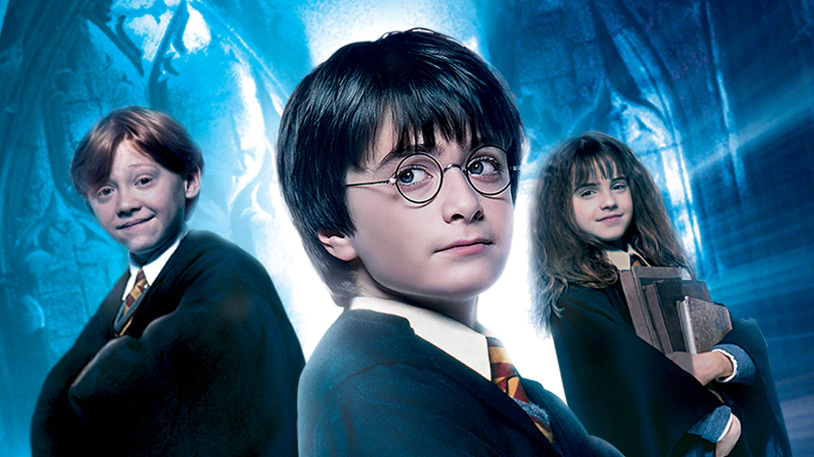

Harry Potter and The Philosopher's Stone
Adaptation of the first of J.K. Rowling's popular children's novels about Harry Potter, a boy who learns on his eleventh birthday that he is the orphaned son of two powerful wizards and possesses unique magical powers of his own. He is summoned from his life as an unwanted child to become a student at Hogwarts, an English boarding school for wizards. There, he meets several friends who become his closest allies and help him discover the truth about his parents' mysterious deaths.
Movie Rating: (9.2/10)
Cast Members
- Daniel Radcliffe as Harry Potter
- Rupert Grint as Ron Wealey
- Emma Watson as Hermione Granger
- Robbie Coltrane as Rubeus Hagrid